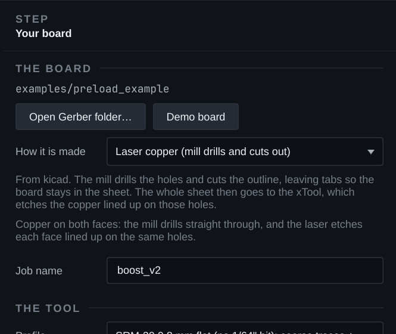
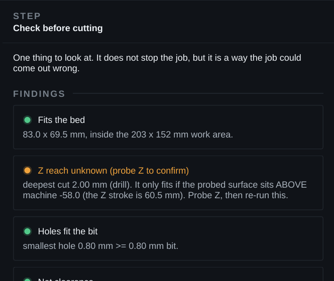
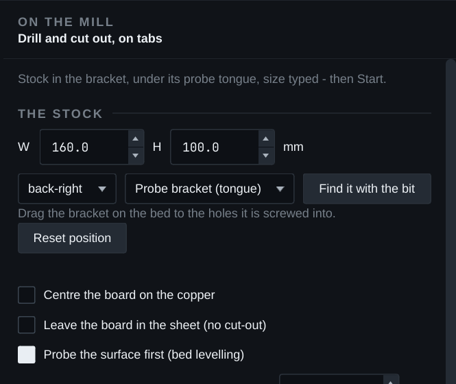
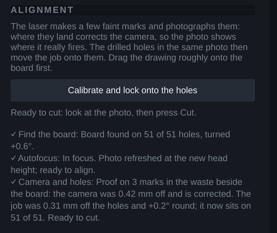
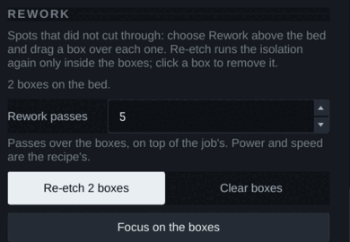
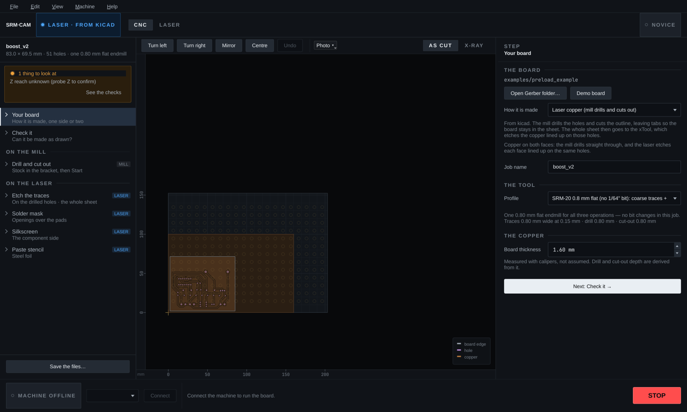
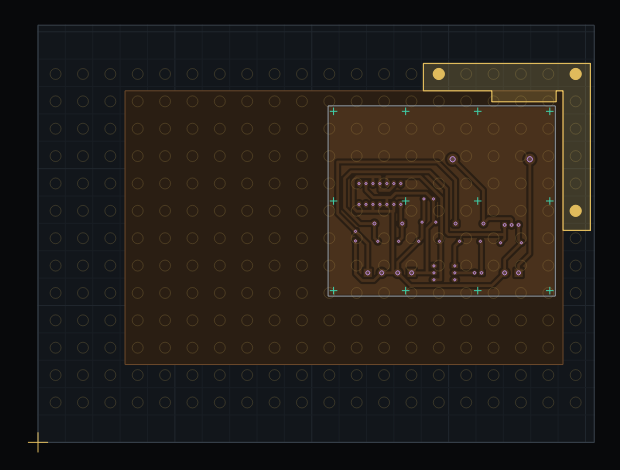
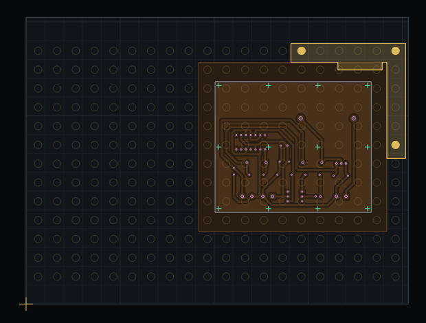
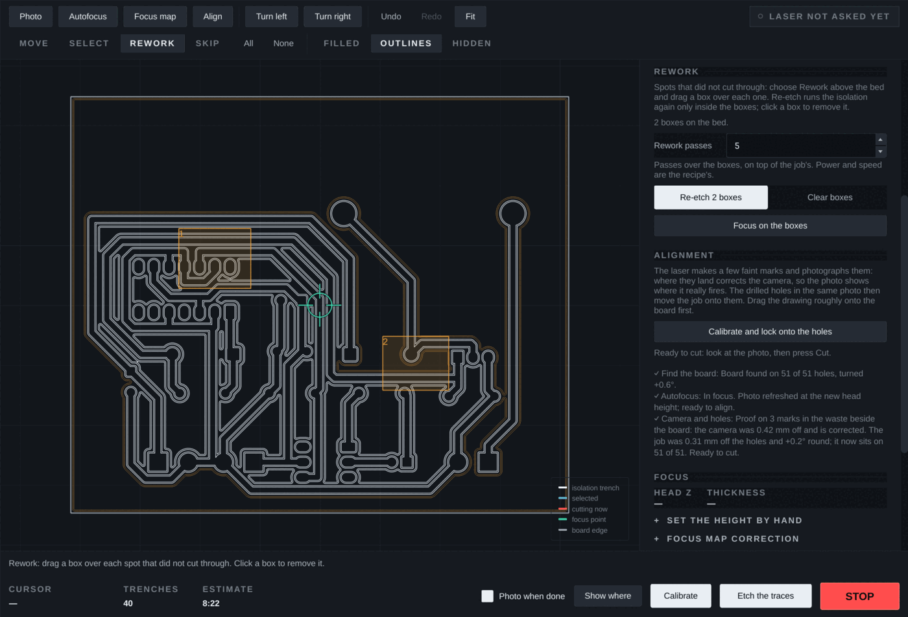

Make a board
The usual way, start to finish. The mill drills the holes and cuts the outline on tabs, so the board stays in its sheet. The whole sheet goes to the laser, which finds the board by its holes and etches the copper. Mask and silkscreen if you want them, then break the tabs.
- SRM-CAM is installed and the KiCad buttons are added: Install & connect.
- At the mill: the corner bracket is screwed to the bed; its tongue presses the probe's wire onto the copper (with a plain bracket, the red probe clip does). See Hardware & firmware. Two USB cables from the mill to the PC: the black one (the Arduino) and the white one (the mill).
- At the laser: one USB cable. It shows up as a network connection; there is nothing to install and no xTool Creative Space.
- Stuck at any point? Troubleshooting.
The whole way, in the app
Click a picture to open it full size.










1 · In KiCad: rules, then Send
- Set the rules before you routeIn the PCB editor, press Set design rules for SRM-CAM (on the toolbar, and under ). Pick Fiber laser copper (holes and outline on the mill) and press Apply.
- SaveSave the board (Ctrl+S). Closing without saving undoes the rules.
- Route, then DRCThe rules move no tracks. Route, then run and fix what it marks.
- Send itPress Send to SRM-CAM. It checks the board against the laser's rules, plots every layer and the drill files into a folder
srm-cambeside the board, and opens it in SRM-CAM.
The buttons, the check, the files and the by-hand export are on From KiCad.
The design rules, by method
What Set design rules for SRM-CAM writes into the board, laid out the way KiCad's shows it. Set the same numbers by hand if you don't use the button. All in millimetres.
| KiCad setting | Laser copper | Ball mill | Flat mill |
|---|---|---|---|
| Minimum clearance | 0.20 | 0.44 | 0.80 |
| Copper to edge clearance | 0.50 | 0.50 | 0.50 |
| Minimum through hole | 0.80 | 0.80 | 0.80 |
| , every class | |||
| Clearance | 0.25 | 0.50 | 0.85 |
| Track width (Default class; others only raised to it) | 0.30 | 0.50 | 1.00 |
| Via hole | 0.80 | 0.80 | 0.80 |
| Via size | 1.80 | 1.80 | 1.80 |
| , every zone and the defaults for new ones | |||
| Clearance | 0.25 | 0.50 | 0.85 |
| Minimum width | 0.25 | 0.50 | 0.50 |
| Thermal relief gap | 0.25 | 0.50 | 0.85 |
- Minimum clearance is the narrowest gap the method can make at all. A custom rule for a fine-pitch footprint may go below the net-class clearance, never below this.
- Holes are drilled on the mill whatever makes the copper, so every method asks for the 0.8 mm drill as the smallest hole, with 0.5 mm of copper round a via. Holes and vias are only ever raised, never made smaller.
- Why 0.25 on the laser: it clears about 0.22 mm out from every copper edge (6 rings), so a pour 0.25 mm off leaves a trench no wider than the gap.
Open it: Your board, Check it
The board opens in SRM-CAM by itself. On the left is the rail, the board's steps from top to bottom: Your board, Check it, then one MILL row and a LASER row for each job the folder has layers for.

1 2 3 4 5- The method chip: Laser · from KiCad. Not Laser? Click it and pick Laser copper (mill drills and cuts out).
- Your board and Check it.
- On the mill: Drill and cut out. On the laser: Etch the traces, then mask, silkscreen and stencil if the folder has them.
- The bed of the mill, with the board on the sheet.
- The page of the row you picked. Next: Check it → at its foot.
- The chipIt must say Laser. It says chosen if you picked a method on the chip for this folder before: your own pick wins over KiCad. More on From KiCad.
- The toolOn Your board, under The tool, the profile is the 0.8 mm flat one. The mill drills and cuts out with the one flat bit in the collet; a ball-mill profile asks for two bits, and the run will not start with it.
- Check itNext: Check it →. Green lines are fine. A red line will cost a board: fix it in KiCad first. On a laser board the gap between nets is checked against the laser's 0.20 mm.
Every board shows this amber line until the mill has touched the copper. The run probes the copper by itself, so it does not stop you. Press Next: Run it →.
Its detail names machine −58.0 and a 60.5 mm Z stroke: the bare limit for the 2 mm-deep drill and cut-out. Keep to the safer rule instead: with the bit on the copper, machine Z above −50 (why).
2 · On the mill: Drill and cut out
- The bitThe 0.8 mm flat endmill in the collet. Both USB cables in.
- The sheetMeasure the copper sheet. Pick one with room round the board: at least 12 mm longer and wider than the board.
- Into the bracketSlide the sheet into the corner bracket, under the probe tongue, copper up. Hold its free edges down: Holding the copper.
- The run pageClick Drill and cut out MILL on the rail. Type the sheet's W and H in mm: in the bracket the run does not measure the sheet, it takes the bracket's corner plus the size you type.
- Centre the boardTick Centre the board on the copper. Leave Leave the board in the sheet (no cut-out) unticked.
- StartPress Connect. The probe's contact must be on the copper: the bracket's tongue, or the red clip. Close the lid, press Start.
The run then goes by itself: it touches the copper once to find it (Find the stock), probes the surface at 12 points, 4 × 3 (Probe the surface), drills every hole 2.0 mm deep (Drill), and cuts the outline in two 1.0 mm passes with four 1.5 mm tabs (Cut the board out). There is no stop for a check: a laser board has no traces to look at yet. At the end the head moves to the view position.
That toast means the mill is done. The board is still on its tabs, in its sheet, and goes to the laser as it is. Every detail of the run page: The mill page.
Keep the board in its sheet, with room round it
Do not break the board out after the mill. On the laser, Calibrate fires three small camera marks, 1.5 mm squares, from 3.0 to 4.5 mm outside the board's outline. With sheet copper there, the marks go in the waste and never touch the board. If any mark would miss the sheet, all three go on the board's isolation round the holes instead: copper the etch clears anyway, so the board is not harmed, but the marks are no longer in scrap.


- How much room: at least 6 mm of sheet on every side, so a sheet at least 12 mm longer and wider than the board. The marks reach 4.5 mm out. At the bracket's back edge the run also keeps the bit clear of the probe tongue; if Start says the job runs under the bracket's probe tongue, use a bigger piece.
- "Leave the board in the sheet (no cut-out)" is a different thing: it cuts no outline at all and pushes the board against the far edges, so there is no waste there. Leave it unticked; the tabs keep the board in the sheet.
Why a laser board is levelled too
The holes and the outline go 2.0 mm deep into a 1.6 mm board: 0.4 mm to spare. A sheet can bow more than that. A 124 mm sheet zeroed at one spot and not levelled (drums1, 19 November 2026) came out with only its left- and right-most holes through. So the run probes the surface first and the cuts follow it.
- Holes not through? Leave the sheet where it is and run again with Start at set to Drill. If it was taken out in between, also tick The sheet was moved: line up with the board's holes. See Start at.
- Before it leaves the mill: vacuum the sheet and brush the swarf out of the holes. Calibrate finds the board by its holes, and a hole full of dust does not show.
The hand-over: mill to laser
- Copper face up, the same way up as it came off the mill. Turned over, the holes look mirrored and the etch would land on the laminate.
- Square to the bed: line the sheet's edge up with the edge of the laser's bed.
- The board, not the sheet, near the middle of the bed: the laser's field is weaker towards its edges. See Where on the bed.
- Flat: if it rocks, tape its corners down in the waste, outside the marks.
3 · On the laser: Calibrate
- Open the jobClick Etch the traces LASER on the rail. The laser page opens in place of the mill's bed, beside the rail, with the board's isolation trenches drawn.
- CalibrateClose the lid and press Calibrate at the bottom right. It finds the board by its drilled holes anywhere on the bed, autofocuses on the copper, fires its marks in the waste to correct the camera, and locks the job onto the holes. It never etches.
- Read the reportUnder Alignment. "Ready to cut: look at the photo, then press Cut." means go on (the button reads Etch the traces).
- Look at the photoThe board should shine like copper. Pale or green means the sheet is upside down: turn it over and Calibrate again.
| The report ends with | Do |
|---|---|
| "Ready to cut: look at the photo, then press Cut." | Look at the photo, then press Etch the traces. |
| "Calibrated, with things to check before you press Cut." | Read the ⚠ lines above it (a camera correction that changed by more than 1.5 mm, or fewer holes seen on the lock) and look at the photo before you etch. |
| "Stopped at … Nothing was cut. Fix what it says, then press Calibrate again." | Do what that step says; Troubleshooting has each message. |
Every line of the report, and what to do about each: The report. A board with no holes cannot be found: drag the drawing onto the blank in the photo and press Calibrate; it corrects the camera and leaves the job where you put it (Calibrate).
4 · Etch, look, re-etch
- EtchPress Etch the traces. The trench being cut lights up, with the time left. Leave Photo when done ticked to see the result on screen.
- LookEtched copper is dark; a trench that still shines is not through. On anything close, use a multimeter across two nets.
- Re-etch the spotsWithout moving the sheet: choose Rework above the bed, drag a box over each spot, and press Re-etch the boxes. Only the boxes are etched again, with the passes under Rework passes.

Keep the laser's lid closed while it runs and the fumes vented; STOP on the bottom bar, or Esc from any page, stops it. More on the laser page.
The mill drills straight through, and the laser etches each face on the same holes: etch one face, turn the sheet over, set Copper face to the other one, Calibrate again, and etch. See Two copper faces.
5 · Finish, in this order
- Solder maskOptional, either face. Ink the board, cure it, put the sheet back on the laser, and the Solder mask row opens the pads: Calibrate finds the holes, opens five test pads and lines the job up on their copper. See Solder mask.
- SilkscreenOptional. On a masked top face it is marked light on the ink, a proven recipe; on the laminate of a bottom-copper board it is still experimental. The Silkscreen row marks it, lined up on the drilled holes. See Silkscreen.
- Break the tabsOnly now. Snap the board out of the sheet and sand the edges.
- Clear the holesPush out any dust or ink left in them.
- Check itA multimeter: continuity along each net, none between nets.
The paste stencil is cut from steel foil, not on the board: see Fine pitch & paste stencil.
More than one board
- Several boards on one sheet go to the laser as one job: see Several boards on one sheet.
- A project of many boards, each ticked off as its steps are done (Pro): see Projects.
- No laser? The mill can make the whole board on its own, coarser and slower: Mill a whole board.
Stuck, or not sure? Ask in the SRM-CAM Discord: Mads and other students answer there, and new features are explained first. See Community.